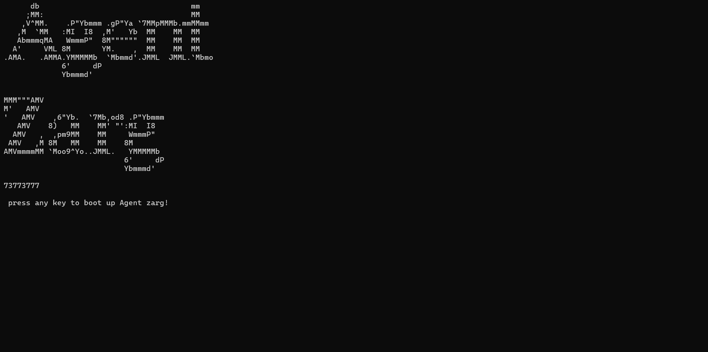

O Agente Zarg é um programa experimental multifuncional desenvolvido para auxiliar usuários em diferentes tarefas de forma simples e acessível.
Ele funciona totalmente offline, sem necessidade de conexão com a internet ou instalação de arquivos adicionais, sendo otimizado para leveza e desempenho.

Versão mais recente com melhorias de desempenho e estabilidade.
Baixar v4Atualização mais recente
O programa foi testado e pode ser executado localmente. Avisos do navegador podem ocorrer por se tratar de um arquivo executável sem assinatura digital.